First, we recall that AB3 is
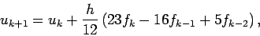
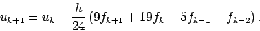
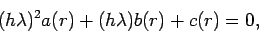
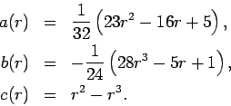
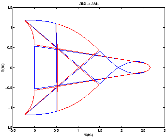
This problem is very similar to the previous one.
We recall that AB4 is
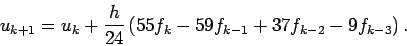
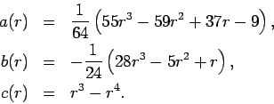
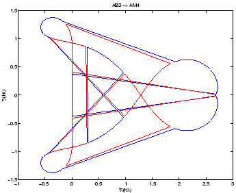
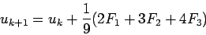
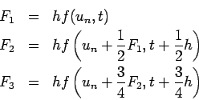
This problem is just a matter of substituting f(y,t) = y+t into the expressions for F1, F2 and F3, and simplifying.
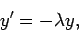
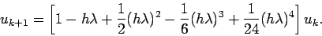
Again, this is just a matter of substituting
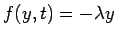
into RK4.
Prove that the local truncation truncation error in the previous problem is O(h5).
To find the local truncation here, just look at the next term in the Taylor series of e-lambda h. This is the first term where RK4 and the exact solution disagree, so the local truncation error is
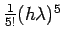
which is O(h5).
An idealized aircraft wing can be modeled as a point vortex in free
space which
induces a flow field
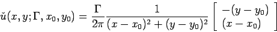 |
(1) |
Suppose the winds are calm, and an aircraft is on final approach to a runway. The aircraft is trimmed so that it is descending at a rate of 50 feet per minute (fpm) and moving forward at 4000 fpm. With the current trim settings (flaps, elevator, pitch, etc),
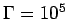
. The landing gear is located 6 feet below the wing.At t=0 minutes, the wing is 56 feet above ground and 4000 feet from the touchdown zone. The pilot, oblivious to ``ground effect'', thinks the aircraft will land in the touchdown zone at t=1 minutes. The pilot is right about the time but wrong about where the plane will land!
The free space flow field (1) is not applicable at low altitude because
air cannot move in or out of the ground. To satisfy this boundary
condition, we must add a virtual image wing that appears to fly
underground and cancels the vertical component of the velocity field
at ground level. Thus, the true flow field,
is
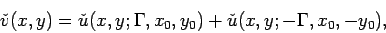 |
(2) |
We know that the vertical position of the wing is
going to be
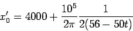
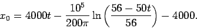
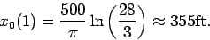
Eli is safe as long as he ducks. Looking at x0 and y0 as described above, the landing gear will pass about 3.5 over the touchdown zone. Here is a picture of Eli's smoke pattern. The red cross is the wing position at time 0.9 minutes and 1 minute. The green lines are the wind velocity vectors. The blue spots are the puffs of smoke. Eli releases one puff of smoke every
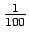
of a second.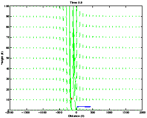
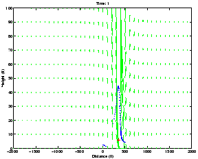